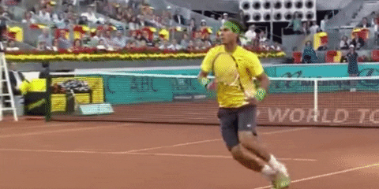
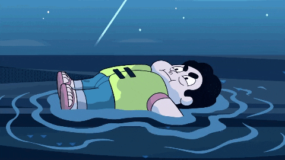
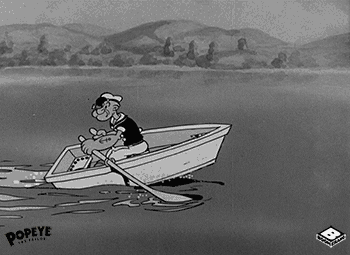
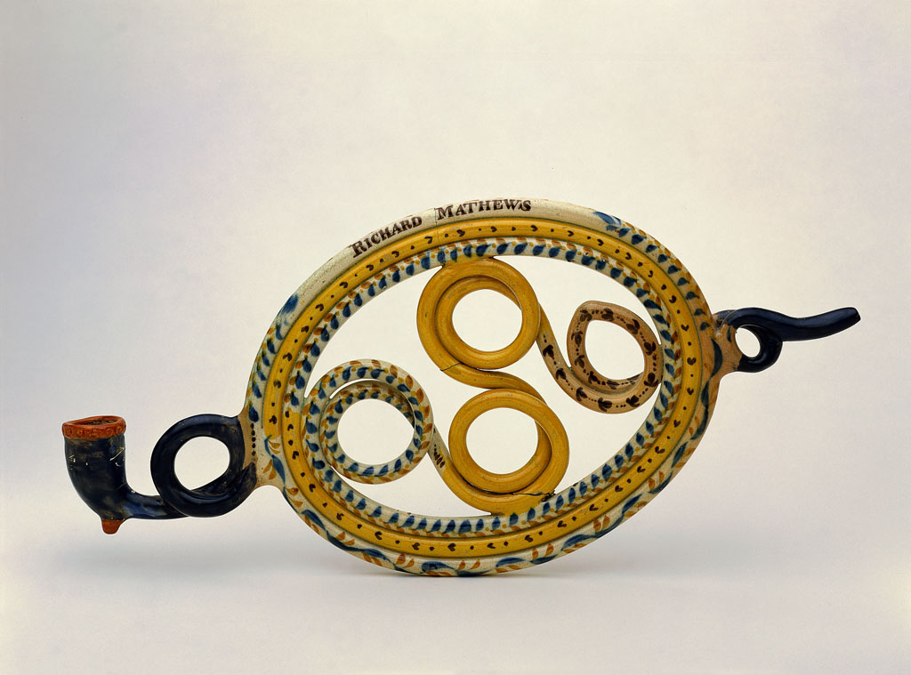
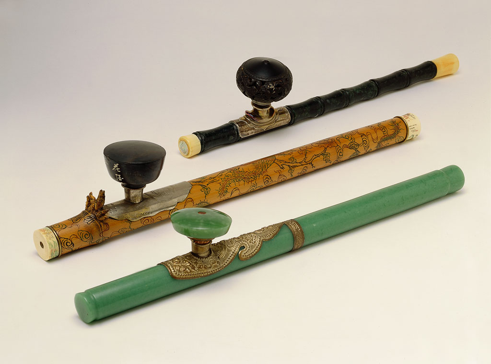
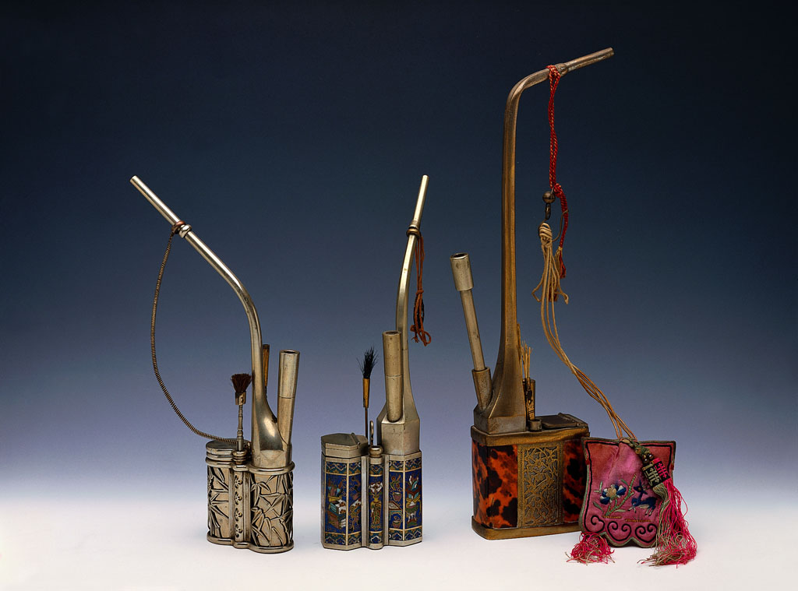
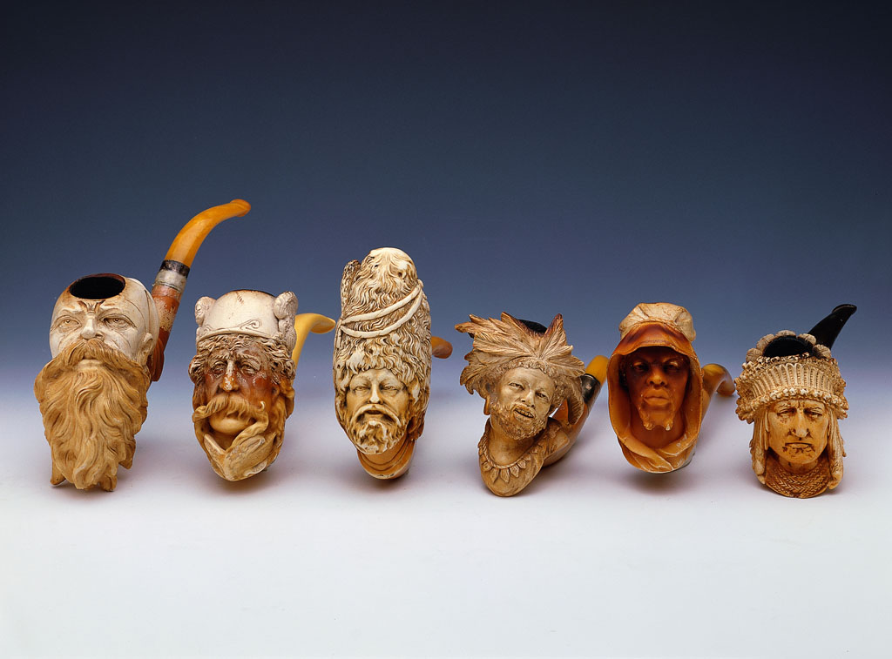

Carlos Armero Alcántara

QUIÉN SOY
Hola! Me presento, soy el abuelo de Lucía :).
Nací en Madrid de una familia numerosa de nueve hermanos.
Pues de jovén estudié en un colegio de curas.
Todos los hermanos estudiamos la carrera de Derecho,la cual acabé licenciandome a los 21 años de edad, para ejercer como Abogado.
Y bueno pues por cosas de la vida, termine trabajando desde muy joven y gracias a eso he podidoviajar por todos casi todos los continentes.
TRABAJOS Y EXPERIENCIAS
Agencia de Viajes Manjon
Asociación Safety Clean. Sede Chicago
Fabricación y Comercialicación de productos químicos
Comercialicación de productos de limpieza de maquinaria industrial
Importador de Ordenadores TANDY
Empresario polifacético
- Director comercial Compañía de seguros
- Compañía de exportación
- Autonomo (varias empresas)
Teatro
- Productor Musical "Evita"
- Productor "CORUSLINE"
- Musical "BARNUN"
- EL MUSICAL. Nuevo Teatro Alcalá
FORMACIÓN ACADÉMICA
Colegio Nuestra Señora del Pilar
Graduado en Derecho 1956. Universidad Complutense de Madrid
DORLAND, Agencia de Marketing
IDIOMAS
 Español LENGUA MATERNA
Español LENGUA MATERNA
 Portugués
Portugués
 Inglés
Inglés
Nociones de Francés, Italiano y Alemán
AFICIONES
Soy un aficionado del deporte.
He practicado el tenis, la pesca submarina y el remo.
  Coleccionista de Pipas
Teniendo una de las colecciones más importantes del mundo en concreto, Pipas de Opio. Con un cantidad cerca de 700 Pipas, compradas e intercambiadas a los largo de mis travesias por el mundo.
   